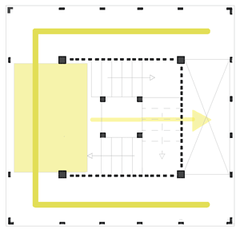
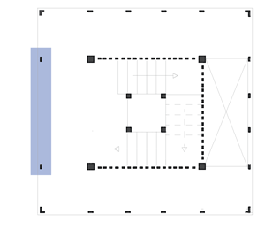
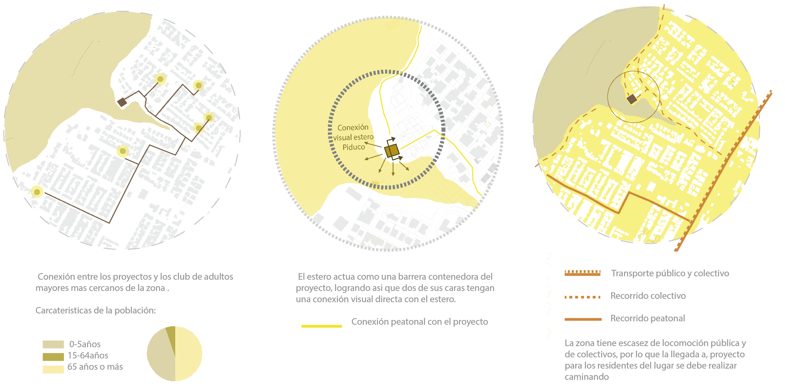
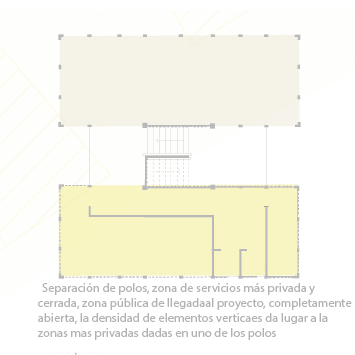
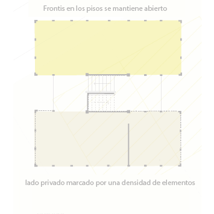
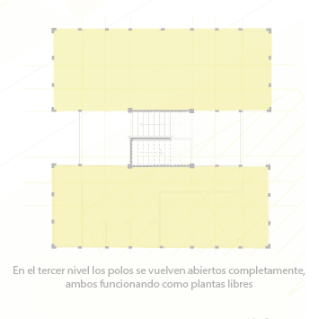

La cual permite rigidizar la estructura en el centro de
esta, se conforma de cuatro pilares con mayores dimensiones que se ubican centrados dentro de la
estructura, esto logra una circulación perimetral más liviana.
Este núcleo rígido sobresale tanto en su
parte inferior como superior, haciendo más evidente su estructura nuclear
 
Los vacíos se disponen en todos los pisos al contrario de la llegada de la escalera, teniendo como recorrido de la torre en forma de U.
Mientras que la apertura de las fachadas están asociadas también a la llegada de la escalera, liberando así la fachada exterior que contiene el núcleo
Posterior a saber la estructura, se indica un predio ubicado en la cuidad de Talca frente al estero Piduco, el cual se encuentra al borde del termino de las casas.
marcando una diferencia entre el estero más natural y la población más urbana.

En las plantas del proyecto a pesar de haber sufrido algunas cambios a su partida general se sigue conservando la estructura nucelar de marcos rigidos
la escalera es un factor importante el cual marca una division de espacios mas públicos o privados y crea doble alturas que se usan para potenciar la vista y las conexiones con el estero
  
En las secciones del edificio se puede apreciar con mayor facilidad el programa y como estos se relacionan entre si
dejando los más públicos y de mayor accesibilidad en las primera y segunda planta. Además, se evidencia la estructura que se mencionaba al comienzo